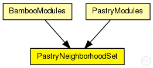
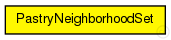

This documentation is released under the Creative Commons license
This documentation is released under the Creative Commons licenseThis module contains the neighborhood set of the Pastry implementation.
Author: Felix Palmen
The following diagram shows usage relationships between types. Unresolved types are missing from the diagram. Click here to see the full picture.
The following diagram shows inheritance relationships for this type. Unresolved types are missing from the diagram. Click here to see the full picture.
If a module type shows up more than once, that means it has been defined in more than one NED file.
| BambooModules (compound module) |
Implementation of the Bamboo KBR overlay as described in ... |
| PastryModules (compound module) |
Implementation of the Pastry KBR overlay as described in "Pastry: Scalable, Decentralized Object Location, and Routing for Large-Scale Peer-to-Peer Systems" by Antony Rowstron and Peter Druschel, published in Lecture Notes in Computer Science, volume 2218. |
| Name | Value | Description |
|---|---|---|
| display | i=block/table |
// // This module contains the neighborhood set of the Pastry implementation. // // @author Felix Palmen // simple PastryNeighborhoodSet { parameters: @display("i=block/table"); }
This documentation is released under the Creative Commons license